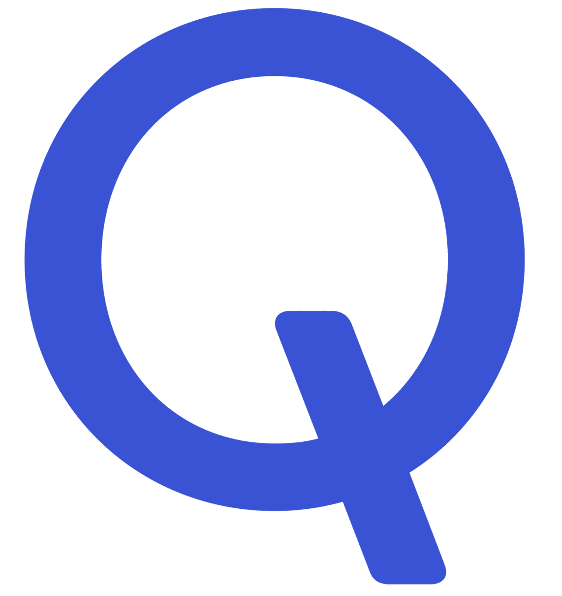

Drag to turn the room. Tap the floor to send the robot somewhere.
Inspired by 63days.github.io
About me
I am Phillip Lee, a second year PhD student at KAIST Graduate School of AI, advised by Prof. Minhyuk Sung. I am also a student researcher at Google DeepMind, Mountain View. I received both my Masters and Bachelors degree at KAIST. I am also fortunate to closely collaborate with Prof. Leonidas Guibas. I am a recipient of

Qualcomm Innovation Fellowship Korea 2025.My research interests revolve around analyzing and enhancing the spatial understanding of multimodal foundation models, with the broader goal of building truly autonomous and embodied agents capable of operating in the physical world. Specifically, I have worked on advancing the 3D spatial reasoning capabilities of vision-language models (VLMs) and building more robust evaluation systems for spatial intelligence. Previously, I have also worked on generative models for image and video generation.
I am open to collaboration opportunities! Please feel free to contact me via email. My CV is at Curriculum Vitae (CV).
Work experience
Student Researcher, Google DeepMind (Mountain View, CA)
May 2026 – Current (Host: Leonidas Guibas)
News
- DiverseVAR is accepted to ECCV 2026.
- I joined Google DeepMind (Mountain View) as a Student Researcher, hosted by Leonidas Guibas.
- Token Warping is accepted to CVPR 2026.
- I am co-hosting the 2nd Workshop on Multimodal Spatial Intelligence (MUSI) at CVPR 2026.
- I won the Qualcomm Innovation Fellowship Korea 2025 with our APC (ICCV 2025) paper.
- Unconditional Priors is accepted to WACV 2026.
- Perspective-Aware Reasoning (APC) is accepted to ICCV 2025.
- I successfully defended my Masters thesis on "Spatial Grounding with Pretrained Image Diffusion Models". Slides are available here.
- I gave an oral presentation on ReGround at U&ME Workshop in ECCV 2024. Slides are available here.
- GrounDiT is accepted to NeurIPS 2024.
- ReGround is accepted to ECCV 2024.
- SyncDiffusion is featured in KAIST Annual R&D Report as a Research Highlight of 2023.
- I gave a spotlight presentation on SyncDiffusion at ML4CD Workshop in NeurIPS 2023 and also presented at Workshop on Diffusion Models. Slides are available here.
- SyncDiffusion is accepted to NeurIPS 2023.
- Started Master's Program at KAIST Graduate School of AI. (Advisor: Prof. Minhyuk Sung)
Publications
-

Hidden Sensitivity in Spatial Reasoning Evaluation: Diagnosis and Re-ranking with VSI-Bench
Combining Theory and Benchmark (CTB) Workshop at ICML 2026
-

-

-

DiverseVAR: Balancing Diversity and Quality of Next-Scale Visual Autoregressive Models
ECCV 2026
-

-

-

-

-

Teaching
- Teaching Assistant, Fall 2025, Diffusion and Flow Models (CS492-C), KAIST
- Teaching Assistant, Spring 2025, Machine Learning for 3D Data (CS479), KAIST
- Teaching Assistant, Fall 2024, Diffusion Models and Their Applications (CS492-D), KAIST
- Teaching Assistant, Fall 2023, Machine Learning for 3D Data (CS479), KAIST
Academic services
- Reviewer: NeurIPS (2024, 2025), ICLR (2025, 2026), ICML (2025), ICCV Workshop (SP4V, 2025), 3DV (2026), AAAI (2026), TPAMI (2025), Eurographics (2026)
- Workshop Organizer: 2nd Workshop on Multimodal Spatial Intelligence (MUSI) at CVPR 2026
Achievements
- Recipient of Qualcomm Innovation Fellowship Korea 2025
- Gold Reviewer of ICML 2026